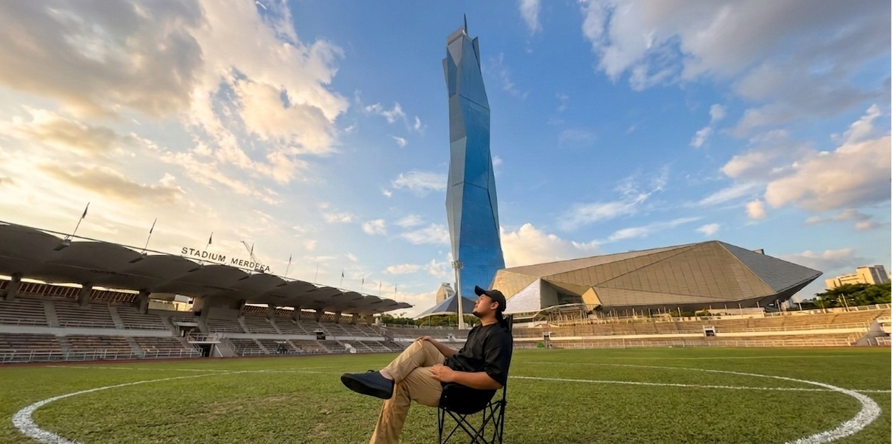

Taufiq Rosyadi
I'm Production Manager
About
Energetic and action-oriented individual with a passion for innovation in IT and engineering. Ability to lead teams and manage complex projects while fostering collaboration. Eager to contribute to dynamic and impactful tech-driven initiatives through technical skills and leadership experience.

Technical Project Manager | Delivering End-to-End Digital Solutions
Expertise in bridging technical engineering with modern web solutions.
- Birthday: 25 April 1996
- Website: taufiqsyadi.github.io
- Phone: +60 11 2821 6025
- City: Bandar Baru Bangi, Selangor D.E, Malaysia
- Age: 30 y/o
- Education: Bachelor of Engineering in Electronic and Communications Technology
- Email: taufiqsyadi@gmail.com
- Freelance: Available
I believe that every technical challenge has a strategic solution. My expertise lies in the ability to translate complex business requirements into actionable, high-impact roadmaps. By merging Agile methodologies with a deep focus on design quality, I ensure that every digital product delivered is not only functional but provides genuine value to the end user.
Skills
A synergy of technical engineering and strategic project leadership. I leverage my background as a full-stack developer to bridge the gap between complex requirements and efficient project delivery. My focus is on architecting high-performance web solutions while leading cross-functional teams to achieve excellence from concept to deployment.
Resume
A strategic blend of technical engineering and production leadership. I leverage my background in full-stack development to architect scalable web solutions while leading cross-functional teams to deliver high-impact digital products. My approach integrates engineering precision with agile project management to drive innovation from initial concept to final deployment.
Summary
Muhammad Taufiq Rosyadi
IT professional with 6 years of experience across system support, web technologies, and IT operations. Proven ability to manage end-to-end IT projects, maintain system reliability, and troubleshoot technical issues in fast-paced environments. Experienced in bridging business requirements with technical solutions, with strong focus on system performance, infrastructure management, and continuous improvement. Seeking to contribute to a structured and technology-driven organization.
- Bandar Baru Bangi, Selangor, Malaysia
- (+60) 11-2821 6025
- taufiqsyadi@gmail.com
Education
Bachelor of Engineering in Electronic and Communications Engineering Technology
2017–2020
Universiti Teknologi Mara (UiTM)
Specializing in the integration of electronic systems and communication technologies. Developed a strong analytical foundation in engineering principles, which serves as the backbone for managing complex technical projects and digital infrastructure today
Diploma of Engineering in Electrical and Electronics Engineering
2014–2016
Universiti Teknologi Mara (UiTM)
Building a comprehensive understanding of electrical and electronics engineering. This period marked the beginning of my technical journey, focusing on circuit design, system maintenance, and fundamental engineering logic
Sijil Pelajaran Malaysia (SPM)
2013
Sekolah Menengah Teknik Sepang
Focused on a specialized curriculum in Electrical and Electronics Engineering. Developed early technical discipline and a passion for technology that led to a professional career in the IT and engineering sectors.
Professional Experience
Production Manager
Mar 2023 – Present
Rekasawang Sdn Bhd
- Lead planning and execution of IT systems and web-based solutions, ensuring high availability and system reliability.
- Supervise technical teams and coordinate tasks to maintain smooth system operations and timely issue resolution.
- Implement quality control processes for system performance, reducing errors and improving user experience.
- Act as liaison between stakeholders and technical teams to align IT solutions with operational needs.
- Monitor ongoing systems, troubleshoot issues, and ensure continuous improvement of digital platforms.
Web Developer
Apr 2021 – Feb 2022
Rekasawang Sdn Bhd
- Developed and maintained web-based systems with focus on performance, scalability, and reliability.
- Managed server environments including hosting setup, DNS configuration, and deployment processes.
- Built and integrated backend systems (APIs, databases) to support business operations.
- Performed system troubleshooting, bug fixing, and optimization to ensure stable operations.
- Supported cross-functional teams by resolving technical issues and improving system workflows.
Technical Support
Mar 2021 – Apr 2021
IT Dept, Institut Kanser Negara (IKN) | Nex Intelligence MSC Sdn Bhd
- Provided IT support for critical healthcare systems, ensuring minimal downtime.
- Diagnosed and resolved hardware, software, and network-related issues.
- Escalated complex issues and coordinated with technical teams for resolution.
- Maintained high service quality in a mission-critical environment.
Programmer Executive
Mar 2020 – Feb 2021
IT Department | Koperasi Al-Najah (KOSMAS)
- Developed both client and server-side components of web applications.
- Conducted system testing (unit, integration, UAT) to ensure stability and performance.
- Assisted in system enhancements and troubleshooting of application issues.
- Collaborated with stakeholders to gather requirements and improve system functionality.
Portfolio
A showcase of the digital solutions I’ve had the privilege to lead and develop. Whether it’s a large-scale system or a high-conversion landing page, my focus is always on delivering quality, scalability, and a seamless experience for every user.


{kind=link}
Contact
I’m always open to discussing new projects, creative ideas, or opportunities to be part of your visions. Feel free to reach out through any of the platforms below.
Address
Bandar Baru Bangi, Selangor D.E., Malaysia.